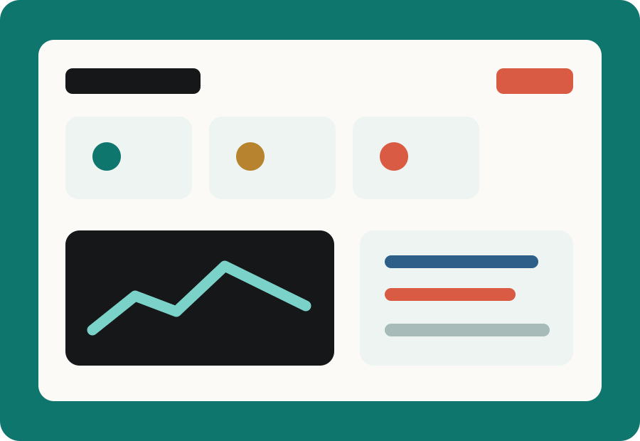
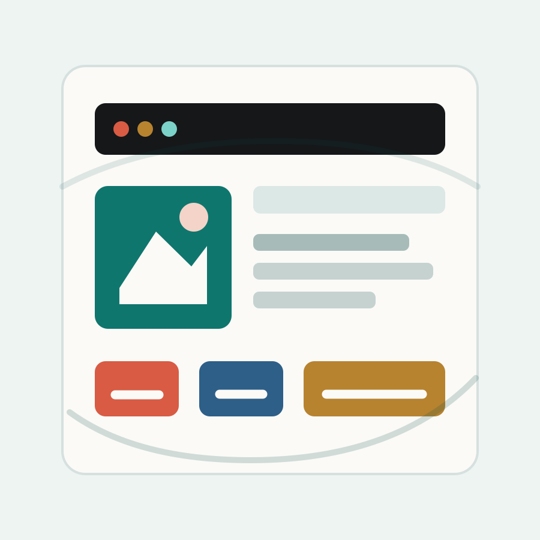
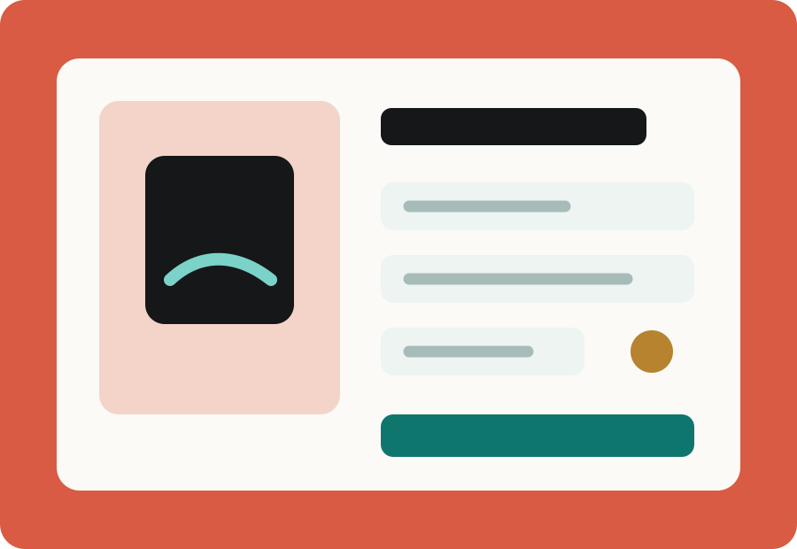
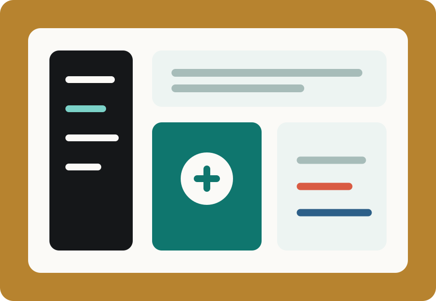

DashboardAnalytics platform
Executive metrics dashboard
A responsive command center for tracking revenue, operations, and growth signals with sharp visual hierarchy.
Available for elite product and engineering roles
I design, build, and ship clean digital products that feel fast, reliable, and intentional. This portfolio is tuned to show judgment, craft, and business impact.

Selected work

DashboardAnalytics platform
A responsive command center for tracking revenue, operations, and growth signals with sharp visual hierarchy.

CommerceConversion experience
A polished flow with clearer pricing, fewer decision points, and stronger trust signals across mobile and desktop.

AI ToolWorkflow automation
A task-focused interface for research, summarization, and project handoff with a clean information architecture.
Why hire me
I turn vague goals into clean user flows, practical scope, and useful outcomes.
I care about spacing, rhythm, hierarchy, responsiveness, and the tiny details.
I keep code maintainable, fast, accessible, and aligned with the system around it.
I move work forward, communicate clearly, and stay with problems until they land.
How I work
Clarify the audience, business target, constraints, and quality bar.
Shape the experience, choose the right tradeoffs, and reduce unnecessary friction.
Implement responsive interfaces with clean code, accessible states, and polish.
Test, tighten, and tune the final result so it feels confident on every screen.
Let's talk
Replace this copy with your exact target role, strongest achievement, and contact links. The layout is already built to make those details shine.